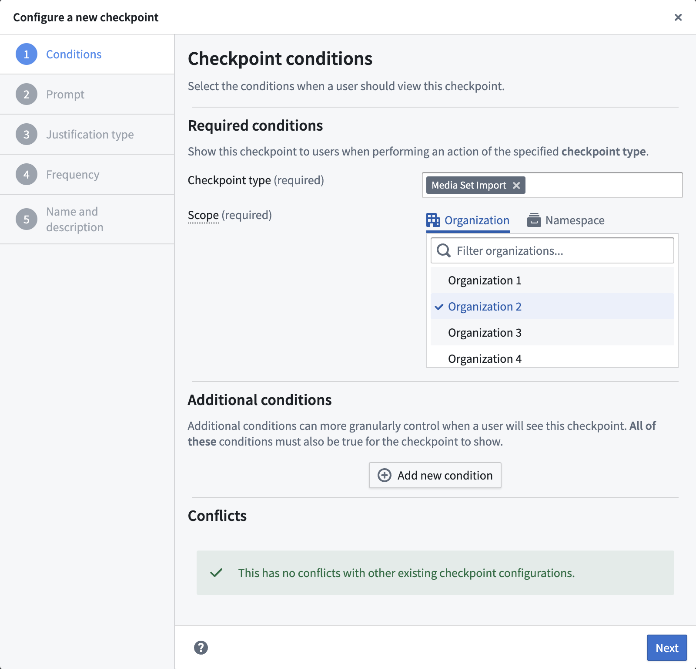
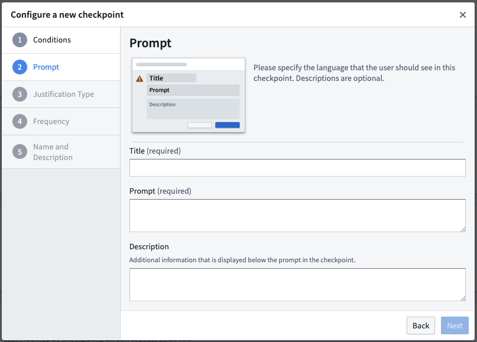
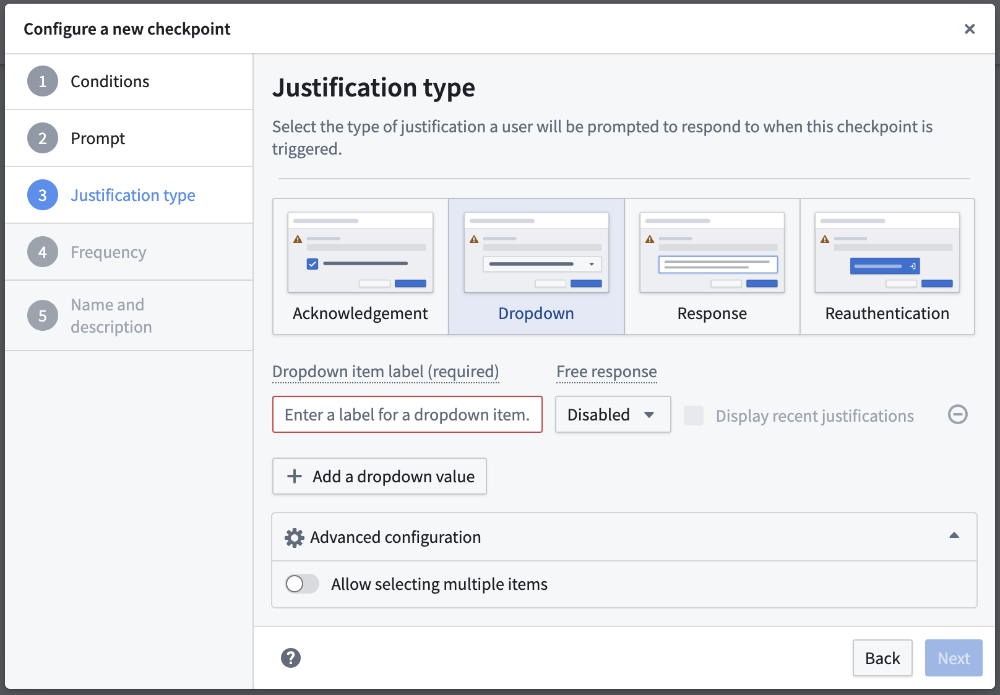
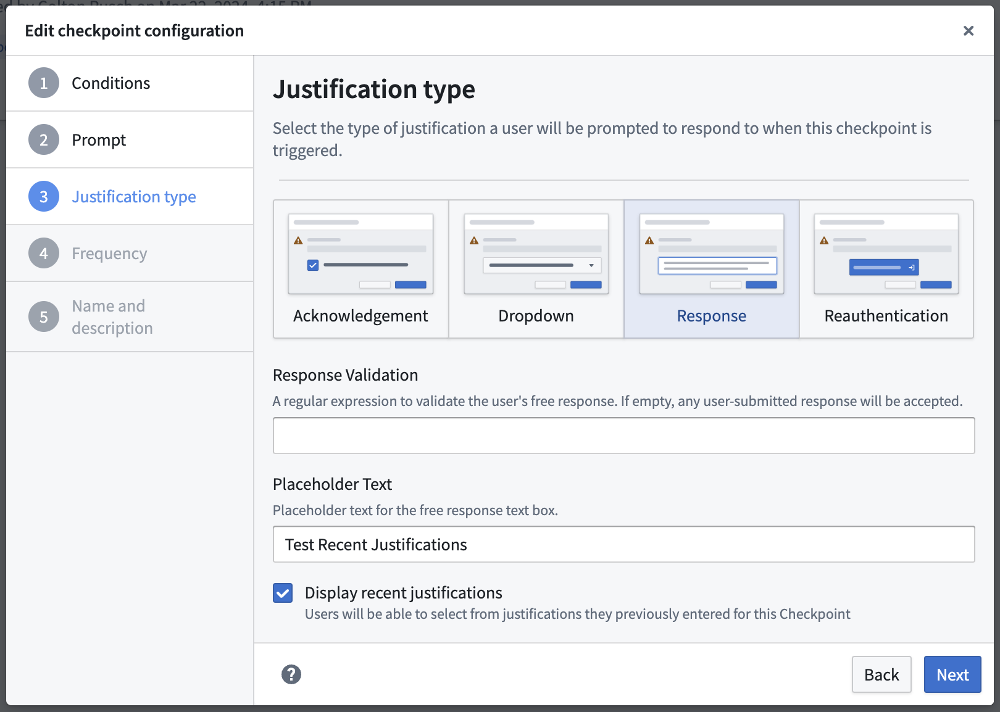
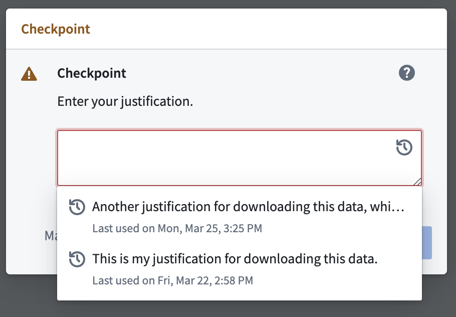
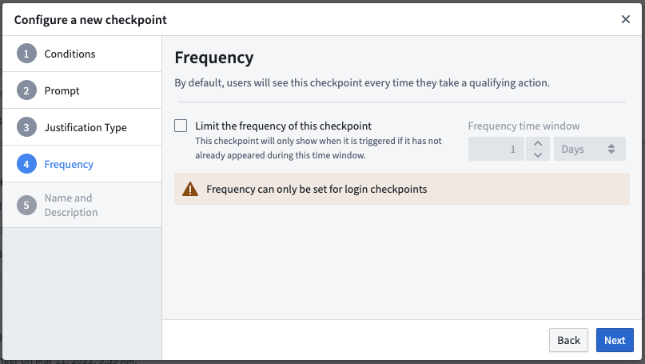
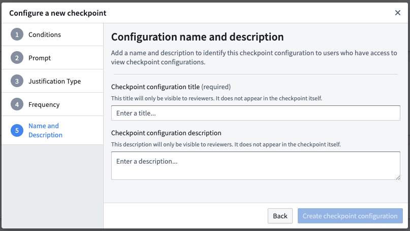

Checkpoints allow Foundry administrators to request justifications for a variety of Foundry interactions by creating checkpoint configurations. These instructions will walk you through the following steps of creating a new checkpoint configuration.
The first step of creating a new checkpoint configuration is to determine the conditions under which a user should see the checkpoint.
These conditions are required for every checkpoint configuration:
:::callout{theme="neutral" title="Extra steps for login checkpoints"} To use the Login checkpoint type, first enable the Checkpoints Login Asynchronous User Manager (AUM) in Control Panel's AUM Section. :::
A checkpoint configured with an organization scope will only prompt users who are members of that organization. Checkpoints scoped to an organization will not be shown to users who are guests of that organization.
To configure a checkpoint scoped to an organization, you will need the Data governance officer role for that organization in Control Panel.
A checkpoint configured with a space scope will only prompt users when they are interacting with a resource that is contained within that space, regardless of the user's organization. Some checkpoint types (like Login) do not describe interactions that involve resources in spaces, and so these checkpoint types cannot be configured with a space scope.
To configure a checkpoint with a space scope, you will need a role which includes the Administer resource-scoped checkpoint configurations operation. If you are configuring a checkpoint which uses a location matcher to target a specific resource, you will need the Owner role on that resource or the Space Administrator role on the space which is serving as scope. If you are configuring a checkpoint which does not include a location matcher, you will need the Space Administrator role on the space itself.
Some checkpoint types also allow you to add additional conditions to more granularly specify when a checkpoint will appear for a user. These additional conditions allow you to create checkpoints that more specifically target certain interactions in the platform or present a user with multiple checkpoints for a particular interaction.
Different checkpoint types support different sets of condition types. For checkpoint configurations that include multiple checkpoint types, only the condition types common to all of those checkpoint types can be used. The available conditions include:
User submitting checkpoint condition specifies that the interacting user is a certain user or a member of a certain group. For example, you can configure a Build log export checkpoint to apply to members of an administration group; only members of that specific group will see the checkpoint when attempting to export a build log.Selected user or group condition specifies that a specific user or group was selected as part of the interaction. For groups, you can further configure whether the condition should also apply to its member groups. For example, you can configure a Group member addition checkpoint to only appear when a user is being added to a sensitive Administrators group or one of its member groups.These conditions can optionally be negated:
AND): If the AND option is selected, the checkpoint will show up only if the condition is true. Every new AND will further restrict where the checkpoint appears.NOT): If the NOT option is selected, the checkpoint will only show up if the condition is false.You can specify only one matcher of each type per checkpoint configuration, but there is no limit on the number of groups, users, resources, or markings you can exempt with exemption matchers.

The next step is to define the language associated with the checkpoint. This allows you to customize how the checkpoint will appear to a user. For example, the prompt can remind users of policies and best practices for downloading, or let them know that they are attempting a sensitive interaction and that their justification will be reviewable.
:::callout{theme="success"} The checkpoint description and prompt fields support Markdown syntax. You can use Markdown to include rich text formatting, bullet points, or links in the checkpoint. :::

Under this section, you will be asked to define how the user should submit their justification. Different justification types offer flexibility around how much information you might want a user to provide before the interaction. There are multiple ways to submit a justification to a checkpoint:

For Response and Dropdown justification types, you can optionally choose to Display recent justifications. Enabling this option for a given free-text response field will allow users to auto-populate their free-text response by selecting one of their 5 most recently submitted justifications from the past month for this checkpoint configuration.


:::callout{theme="neutral"} This step is only available for Login checkpoints. :::
By default, users will see the checkpoint every time they have an interaction that meets all of the configured conditions. Under this section, you can specify how frequently a checkpoint should show up for a user. You can configure the checkpoint to display for a user only after some specified amount of time has passed since the user last saw the same checkpoint.

In this final section, you will be asked to provide a name and description for this checkpoint configuration. Other users who can create and edit checkpoint configurations will be able to see these details, but users who see and satisfy the checkpoint will not be able to see the name and description.
